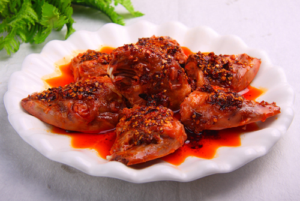
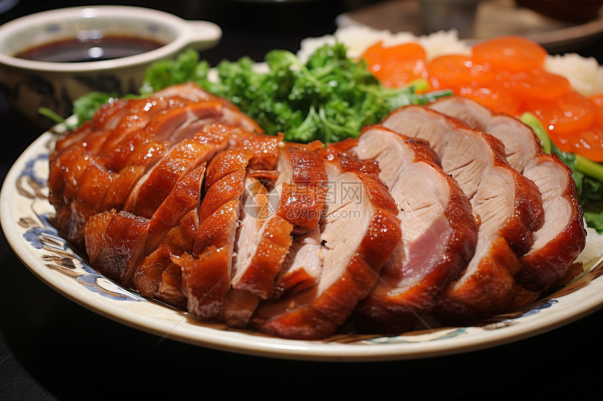

广宁云吞是一种传统的美食，由云吞和水煮而成。云吞是一种由猪的身体和头部制作的美食，通常包含猪的肉、骨、内脏和头部。云吞煮水是一种传统的烹饪方法，通常使用水煮云吞，使云吞煮水成为一种美味的美食。

红烧兔头是一种传统的美食，麻、辣、鲜、香、卤味醇厚。肉质酥烂，骨肉易分离，骨髓滋味浓郁，回味悠长。

北京烤鸭是一种传统的美食，皮酥脆化渣，肉细嫩多汁。入口肥而不腻，带有果木或蜜糖的独特焦香。需搭配酱、葱、饼同食，形成咸、甜、鲜、脆、润的复合口感。
湘菜是一种传统的美食，由鱼、虾、蟹、肉、鱼、虾、蟹、肉等组成。湘菜的制作方法有很多种，比如用鱼、虾、蟹、肉等制作，用鱼、虾、蟹、肉等制作，用鱼、虾、蟹、肉等制作。
粤菜是一种传统的美食，由鱼、肉、蔬菜、调料等组成。粤菜的美食通常包含鱼、肉、蔬菜、调料等。
鲁菜是一种传统的美食，由猪的身体和头部制作的美食，通常包含猪的肉、骨、内脏和头部。鲁菜煮水是一种传统的烹饪方法，通常使用水煮鲁菜，使鲁菜煮水成为一种美味的美食。